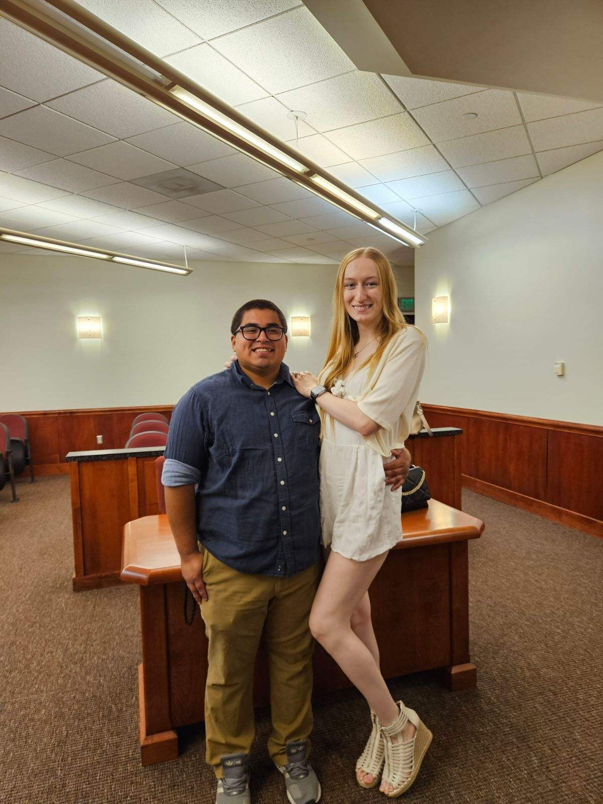

My Resume

Summary
Young individual, who is hard-working, determined, and flexible in many situations, to top it off I am also an adept/rapid learner.
Education
- Norman County West High School
- 2014-2018 (school shutdown)
- Crookston High School
- 2018-2019
- High School Diploma
- Devry University - Illionois
- 2022-Present
- Bachelors Degree in Computer Science - Software Engineering (Currently attending)
- 4.0 GPA
Work Experience
- Locating Techinician III -- USIC LLC. -- Minnesota
- 02/2023-Current
- Responsibilities
- Locate underground utilities (Centurylink, Frontier Communications, PKM Electric Cooperative) for contractors doing underground
work.
- Usage of paint (red, orange), flags, and other methods to communciate information to excavators.
- Usage of GPS and blueprints to locate underground utilities.
- Warehouse Associate -- Acme Tools -- Grand Forks, ND
- 03/2022-10/2022
- Responsibilities
- Pull orders, receive in items, ship out orders
- Inspected returned merchandise for damage or defect before restocking shelves or returning it back to suppliers
and vendors.
- Loaded and unloaded shipments from trucks and picked up and moved heavy packages and items using forklifts.
- Moved boxes, containers and pallets with special-purpose equipment to meet demanding production targets.
- Underground Utility Laborer -- Rhino Contracting -- Grand Forks, ND
- 05/2021-12/2021
- Responsibilities
- Dig/vac (high pressure machine that uses water to cut through, and have tank to suck up the muddy water/rocks
etc) locations that have been marked (gas mains/gas service/fiber optic cables/phone lines etc) by our
contractor (Excel, Midco, Century Link)
- Performed general clean-up activities onsite including sweeping and disposing of debris.
- Assisted in the installation of new manholes and other utility structures according to specifications.
- Submitted job status reports for recordkeeping.
- Receiving/Picker Associate -- Digi-Key Corporation -- Thief River Falls, MN
- 07/2020-03/2021
- Responsibilities
- Unpack boxes of product, make sure all the data is put into the system correctly and matches up with the products.
- Recorded shipment data for reporting, accounting or recordkeeping purposes.
- Verified accuracy of shipping documents such as bills of lading, packing lists and invoices.
- Contacted transport companies and suppliers to expedite, trace, or return shipments.
- Computed shipping, storage or demurrage charges using computer or price list.
- Checked items to be shipped against work orders to confirm correct quantities, destination and routing.
- Team Crew Member -- Taco Johns -- Thief River Falls, MN
- 01/2020-07/2020
- Responsibilities
- Take orders, make food, clean stations and dishes and maintain positive communication between customers and
fellow employees
Skills
- Organizational Skills: Adept
- Technical Communication: Adept
- Shipping & Receiving: Adept
Other
Hobbies
Contact